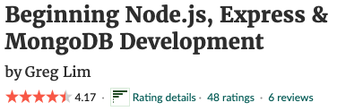
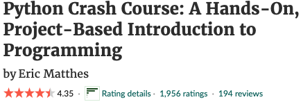
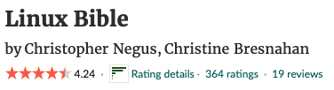

TOP 10 BOOKS TO START YOUR PROGRAMMING JOURNEY
There are many great computer programming books out there, and it's tough to say which one would be the best summary for everyone. Here are the top 10 choices for computer programming books that are used and recommended by successfull programmers include:
1. HTML&CSS AND JAVASCRIPT&QUERY by Jon Duckett
These books are well-written and easy to understand, making them a
great resource for beginners learning web development. They are
also visually appealing, with plenty of code examples and graphics
to help explain the concepts.
"HTML & CSS: Design and Build Websites" is a comprehensive guide
to building websites using HTML and CSS. it covers all the
essential concepts of HTML and CSS, including how to structure and
style web pages. It also includes practical exercises and examples
to help readers apply what they have learned.
"JavaScript & JQuery: Interactive Front-End Web Development" is a
companion book that teaches readers how to add interactivity and
dynamic effects to their websites using JavaScript and jQuery. The
book covers topics such as event handling, animating elements, and
working with AJAX and APIs.
GOOD READ REVIEW

2. Beginning Node.js, Express & MongoDB Development by Greg Lim

This book teaches readers how to build web applications using the
Node.js runtime, the Express web framework, and the MongoDB
database.
The book covers all the essential concepts of these technologies,
including how to set up a development environment, create
server-side scripts using Node.js and Express, and work with the
MongoDB database to store and retrieve data. The book also
includes practical exercises and examples to help readers apply
what they have learned.
GOOD READ REVIEW

3. THE C PROGRAMMING LANGUAGE BY DENNIS RITCHIE AND BRIAN KERNIGHAN

The book covers all the essential concepts of the C programming
language, including data types, control structures, functions, and
pointers. It also includes a number of practical examples and
exercises to help readers apply what they have learned.
GOOD READ REVIEW

4. C++ HOW TO PROGRAM BY Paul Deitel and Harvey Deitel.

This is a very good introductory book for C++ beginners. It is
very well written and structured with lots of exercises and
practice questions after every chapter. It contains a lot of
helpful tips and hints to guid you through the practice questions.
This book has helped me a lot when I started my computer
programming journey.
GOOD READ REVIEW

5. PYTHON CRASH COURSE BY ERIC MATTHES
This book is a very straightforward introduction to python
programming. During your read you will learn three real word
projects like creating a Alien Invasion video game, build and
deploy a web app, and data visualization techniques to make
graphs. It starts out with a walk through of the basic elements
and data structures, strings, list, variables, and tuples.
GOOD READ REVIEW

6. HEAD FIRST JAVA, 2nd Edition

This book the most fun book I have ever read in my computer
programming journey. Lots of images to keep you interactive while
learning. This book is over 15 years old and java has updated
their framework so I recommend to buy the latest version that is
set to be release on june 2022. Head first series is always a must
have on the bookshelf.
GOOD READ REVIEW 
7. LINUX THE BIBLE by Christopher Negus

This book is a very hands-on Linux guide for beginners. This book
takes you step by step through what you need to know to get the
job done. I have never read a linux book that is so detailed. It's
a must have book for linux reference.
GOOD READ REVIEW

8. ORACLE SQL NOTES
Oracle database SQL note is very much straight forward. You do not
need to purchase any sql or PL/SQL books in my opinion. The oracle
nates is free on the Oracle website to download for free. SQL is
one of the easiest Language you can learn in computer programming
so no need to purchase expensive book to start querying.

9. Clean Code BY Robert Cecil Martin

This book explains the importance of well written and organized
code. As a programmer or developer, It can be difficult at times
to read code that is not written by you. Companies has lost
countless of resources due to poorly written code. understanding
the concept of writing organize code will not only improve your
skills as a programmer, it will save time rewriting code that
perform the same task. It explains why you should use descriptive
names when naming variables and functions, the concepts of writing
a function, and some other useful points.
GOOD READ REVIEW

10. Introduction to Algorithms BY Thomas H. Cormen, Charles E. Leiserson, Ronald L. Rivest, and Clifford Stein.

This book is an excellent book to learn Algorithms and data
structures. It has some math concepts that is useful in computer
science that will help you understand why thing work the way they
work in computers. This book do not teach you how to code rather
helps you understand the rules of algorithms.
GOOD READ REVIEW